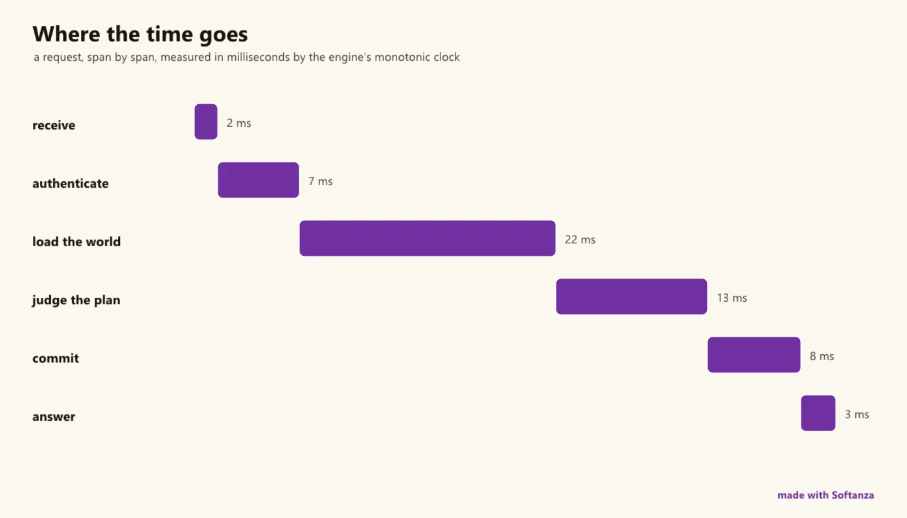

Performance
Closes the OpenTelemetry triad, SLA and capacity analysis in one plane; export only, no storage or dashboards.
6 Strong · 5 Solid · 1 Partial · 0 Emerging
Measured against: OpenTelemetry · Prometheus · Folders: base/perf · The guide to this area's functions

Rethought from first principles
What Softanza kept from what works, and what it rethought, as the library wrote it down in its design documents and narrations.
The Softanza wayPerformance is something a program knows about itself: the engine measures, the code declares the budget, and any corrective act passes through governance.
Kept from the best practice
- Data leaves in open formats other tools read: Prometheus text, OpenTelemetry (OTLP) and W3C trace ids. Storage and dashboards are left to those tools, by design. source
- Analysis rests on classic operational laws: utilization U = X·D and Little's law N = X·R. Response time is a distribution (p50, p95, p99), never just an average. source
- Durations use monotonic clocks only, immune to network time corrections. Wall-clock time is kept for timestamps, never for measuring how long something took. source
Rethought
- The performance budget is code, declared next to what it judges. A missed target becomes a finding that fails the build, through the same gate as security rules. source
- Watch freely, act through the gate. Scaling or restarting is a governed plan; a language-model actor can analyse and propose it but is structurally unable to commit. source
- Each measurement is cross-checked by an independent one: Little's law against the counted requests in flight. A formula that cannot fail proves nothing. source
- The monitor states its own cost. SelfCost() reports what observing costs, a guard fails if it exceeds a stated share of the work, and fixed-size rings keep memory flat. source
One of the most complete and rigorous planes in the library -- P0-P11 all shipped, 366 assertions -- it closes the OTel triad (metrics + traces + logs, all in native OTLP JSON) and exposes Prometheus text, and adds SLA judgment with edge-triggered alerting, a sampling profiler, queueing-theory capacity analysis and a driven-load harness, in one coherent plane. Its real signature is measurement discipline: clocks as scopes, Windows 15.6 ms quantization handled, self-cost priced, and a rule that unmeasured is an error, never a silent pass. What it is not, by design, is the storage-and-dashboard half.
What a maker does with it, and what stands out
- Closes the OTel triad (metrics + traces + logs) and exposes Prometheus text, in one plane
- Measurement discipline: clocks as scopes, Windows 15.6 ms quantization handled, self-cost priced with its own machinery
- Unmeasured is an error, never a silent pass
- Queueing-theory capacity analysis with independent self-checks (utilization, Little's law)
What is owed
- Auto-instrumentation (zero-code, opt-out rather than opt-in Observe)
- Full trace-context propagation (baggage, async-context through reactor jobs, per-task scopes)
- Head/tail trace sampling; in-process aggregation (PromQL-lite); native-stack profiling
- A storage/dashboard integration story; macOS RSS; one stale CLAUDE.md metadata line (P0-P7 / 283 vs P0-P11 / 366)
One example, run
An honest stopwatch: a monotonic clock, milliseconds, and the loop it measured.
oW = new stzStopwatch("loop")
oW.Start()
x = 0
for i = 1 to 200000
x += i
next
oW.Stop()
? oW.Elapsed()
? x7.91 20000100000
run on 2026-10-01 at 01:52; the value is in milliseconds and moves with the machine's load
The lanes, one by one
Lanes and their notes are quoted as they were read at the source, on Read from the source on 2026-09-16, from a read-only main worktree.